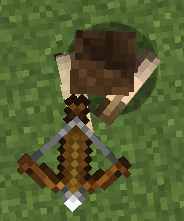
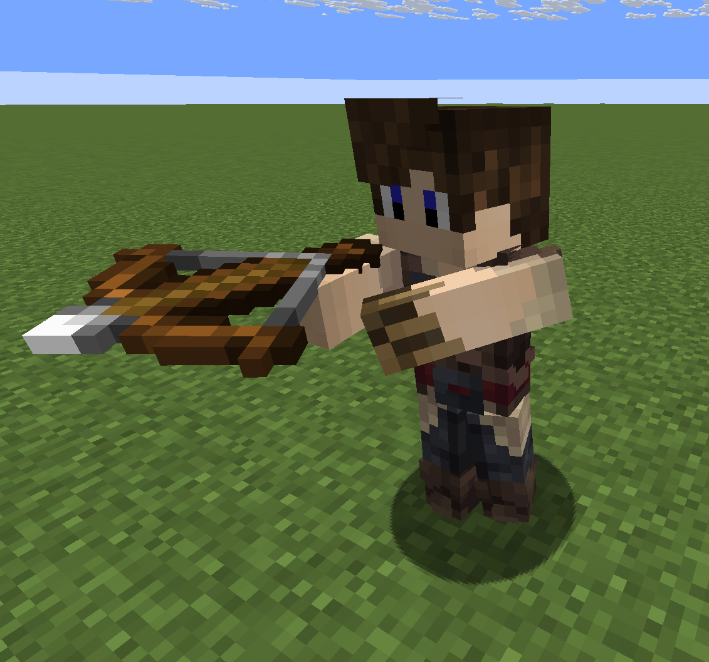
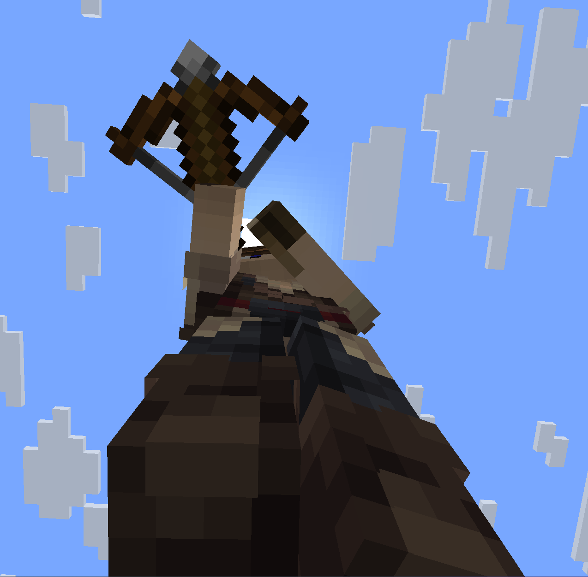
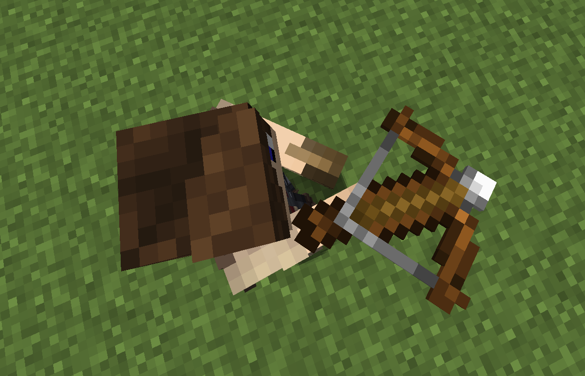
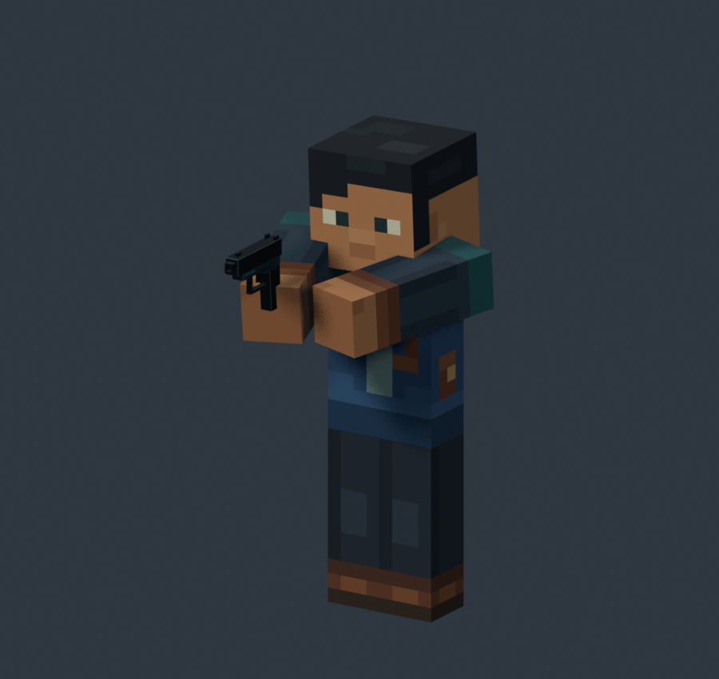
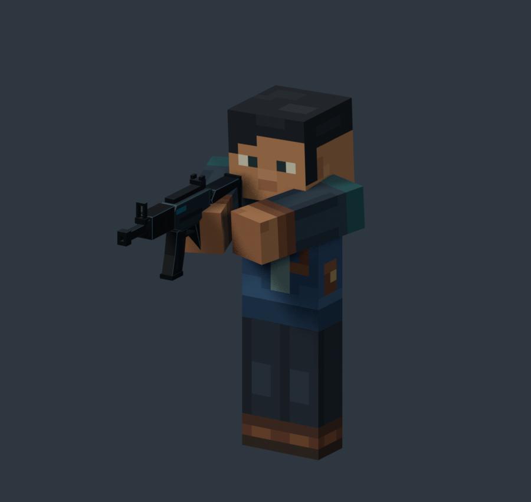
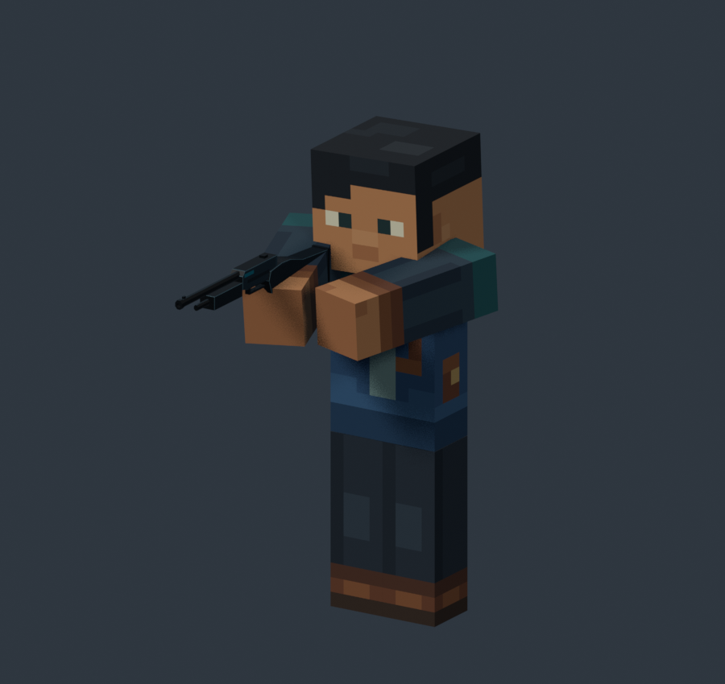
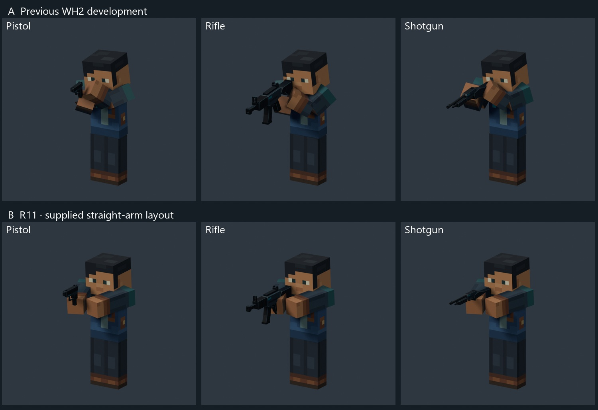

R11 — simple blocky hold
Straight right arm carries the weapon. Straight left arm reaches diagonally, leaving a visible gap. Forward barrel, slight head tilt. Study only · human review pending.




The supplied overhead image defines the arm layout. Both arms reach inward as straight cuboids; the right hand reaches farther forward. The left arm reaches toward the primary side without touching either the other arm or the weapon. Each firearm uses this same layout.
Pistol

Rifle

Shotgun

A/B views use the same character, weapon geometry, camera and lighting. Latest R11 guns are 25% larger, then 15% narrower in width. Their grips and stocks retain clearance at the raised reference height. A is the stopped WH2 development pose.

Living showcase
Ready breathing · 4 seconds · loop.
Existing Walk, Sprint and turn path are retained. Turn preview includes the original separate direction test cases. No production migration.